Funktionen
Alles, was du im Gym brauchst, und ein Avatar, der dafür sorgt, dass du wiederkommst.
GymButt protokolliert Krafttraining, Cardio und Schritte und belohnt jedes Training mit XP, Levels und neuen Items für den Avatar Butt. Grundfunktionen sind gratis, ohne Konto und ohne Werbung.
Trainieren
- Fertige Trainings für Anfänger, Intermediate und Profis
- Mit Körpergewicht, Freihanteln oder Maschinen
- Über 300 Übungen mit Figur, Anleitung und typischen Fehlern
- Muskelfigur mit Haupt- und Hilfsmuskeln pro Übung
- Eigene Vorlagen und eigene Übungen
- Gewichtsempfehlung fürs nächste Mal
- Hantelscheiben-Rechner und Supersets
- Pausentimer im Sperrbildschirm und in der Dynamic Island
- Cardio mit Zeit und Strecke, Treppensteiger mit Stockwerken
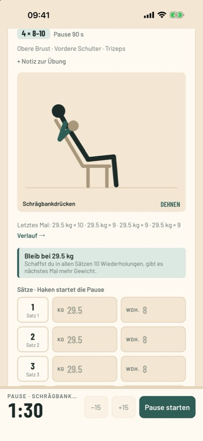
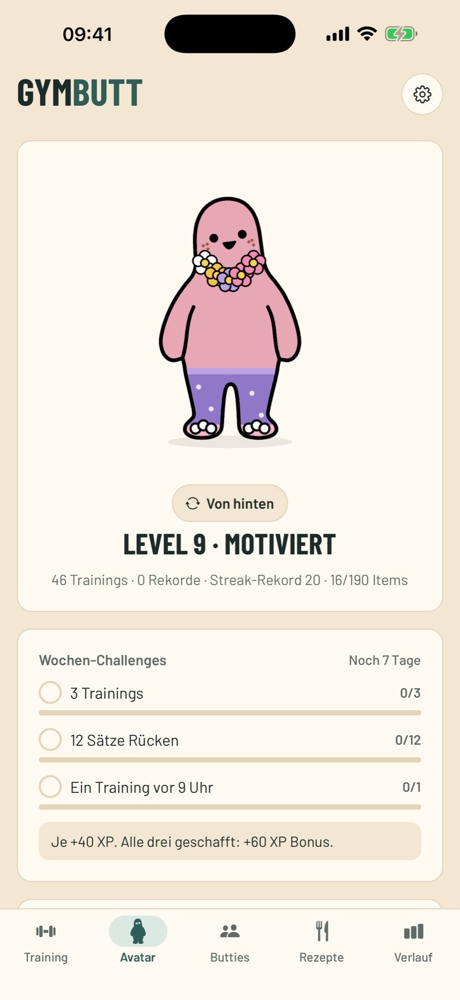
Butt, dein Avatar
Jedes Training gibt XP. Mit jedem Level und jedem Erfolg schaltest du neue Items frei: Kappen, Frisuren, Brillen, Outfits und Fellfarben. So sieht Butt mit der Zeit immer lustiger aus.
- Streak mit Ruhetagen und Freeze
- Wochen-Challenges und Monats-Challenges mit eigenem Item
- Stimmung: Butt lümmelt erst nach mehreren Tagen ohne Bewegung auf dem Sofa
- Level und Items gehen nie verloren
Fortschritt sehen
- Verlauf mit Kalender und Wochenplan
- Muskelkarte: welche Muskeln diese Woche dran waren
- Persönliche Rekorde und Verlauf pro Übung
- Schrittziel aus Apple Health
- Import aus Strong und Hevy (CSV)
- Training als Bild teilen oder an Strava senden
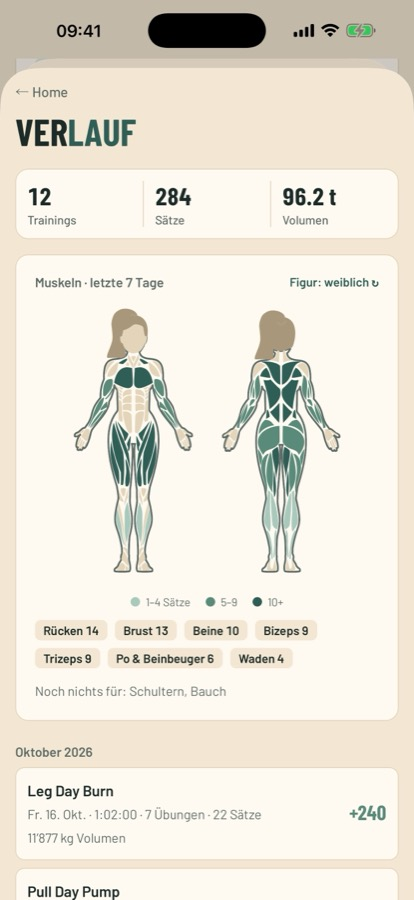
Butties
Gruppen mit bis zu sechs Leuten. Eure Avatare stehen nebeneinander, ihr seht, wer trainiert hat, gratuliert euch und teilt Vorlagen. Bewusst ohne Rangliste und ohne öffentliche Profile. Für Butties brauchst du ein Konto mit «Mit Apple anmelden».
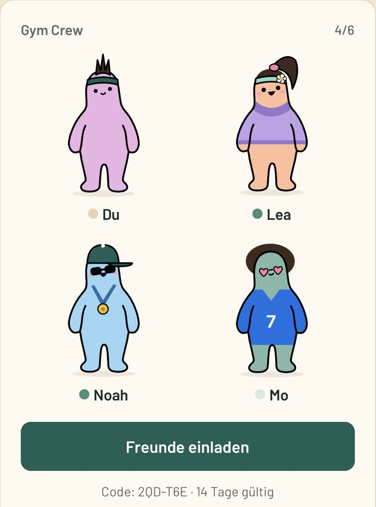
Essen, das zum Ziel passt
Über 100 einfache Rezepte, vegan, vegetarisch oder mit Fleisch. Dazu ein Protein-Tagesziel passend zu Gewicht und Ziel, eine Einkaufsliste und ein Kochmodus mit Timern.
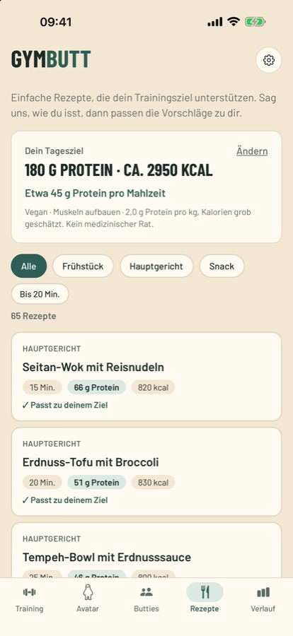
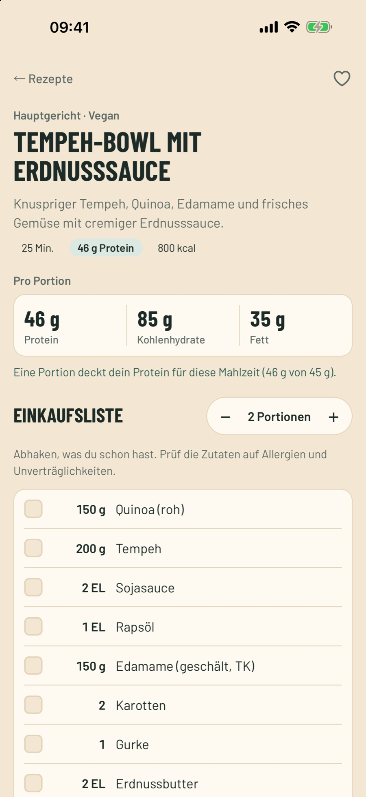
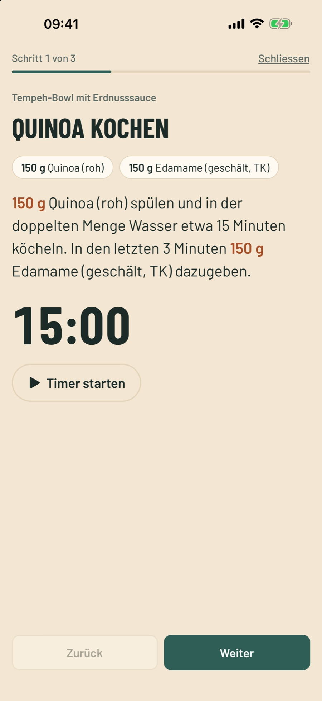
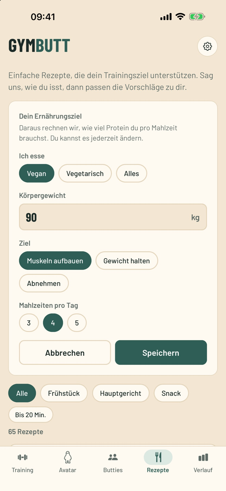
Analysen mit Pro
Mit GymButt Pro siehst du genauer, wie dein Training läuft: Berichte pro Woche und Monat, Kraft-Level pro Übung und Trainings, die sich selbst zusammenstellen.
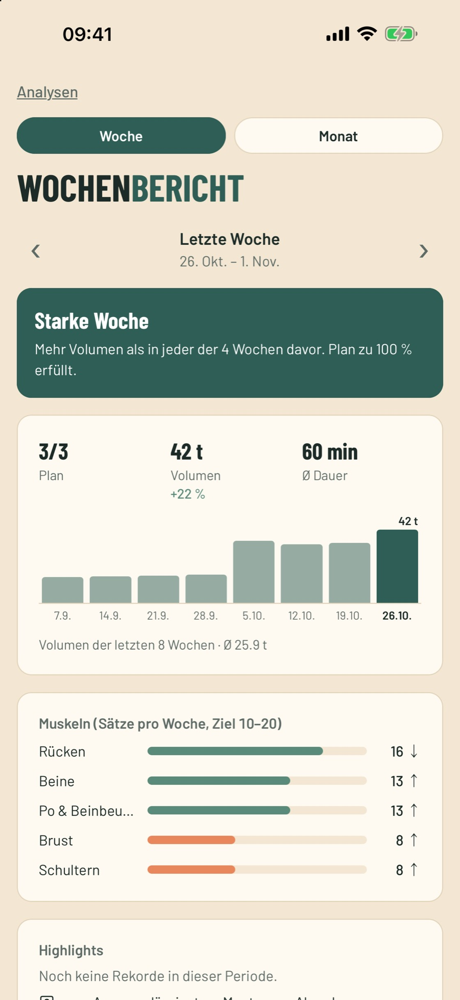
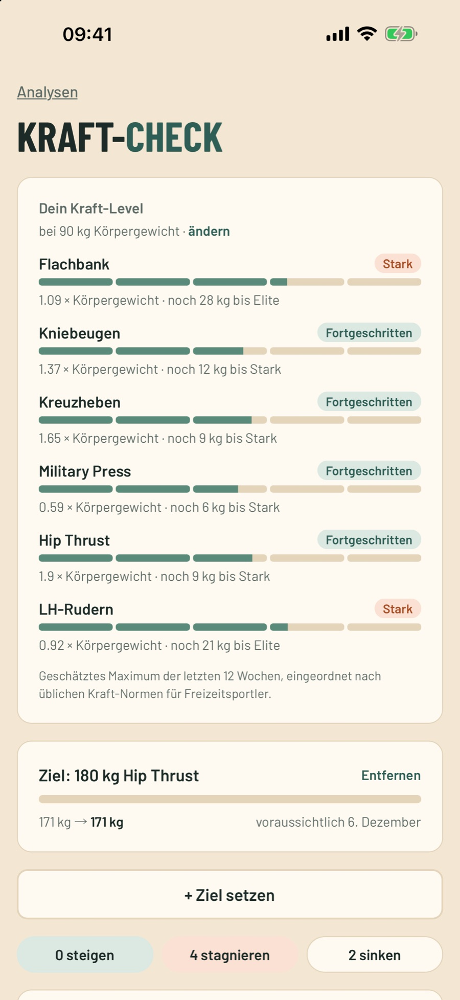
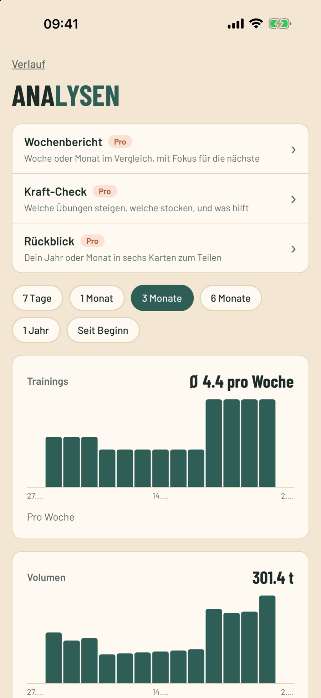
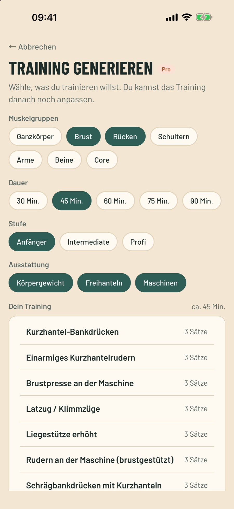
Gratis und Pro
| Funktion | Gratis | Pro |
|---|---|---|
| Training, Übungen, Vorlagen, Pausentimer | Ja | Ja |
| Avatar, Streak, Challenges, Items | Ja | Ja |
| Joker für den Streak | 1 pro Monat | 2 pro Monat |
| Verlauf, Rekorde, Muskelkarte | Ja | Ja |
| Butties-Gruppen | 1 Gruppe | bis 3 Gruppen |
| Rezepte | 5 pro Ernährungsform | alle |
| Training generieren | – | Ja |
| Wochen- und Monatsbericht, Kraft-Check | – | Ja |
| Kraft-Level und Ziele, Erholung pro Muskel | – | Ja |
| Volumen-Trends, Rückblick, CSV-Export | – | Ja |
| Ernährungsprofil mit Tagesbedarf und Makros | – | Ja |
GymButt Pro ist ein Abo über Apple (in der Schweiz CHF 3 pro Monat oder CHF 25 pro Jahr) mit 7 Tagen gratis zum Ausprobieren. Werbung gibt es in keiner Version.
Hol Butt vom Sofa
GymButt ist gratis im App Store erhältlich, für iPhone.